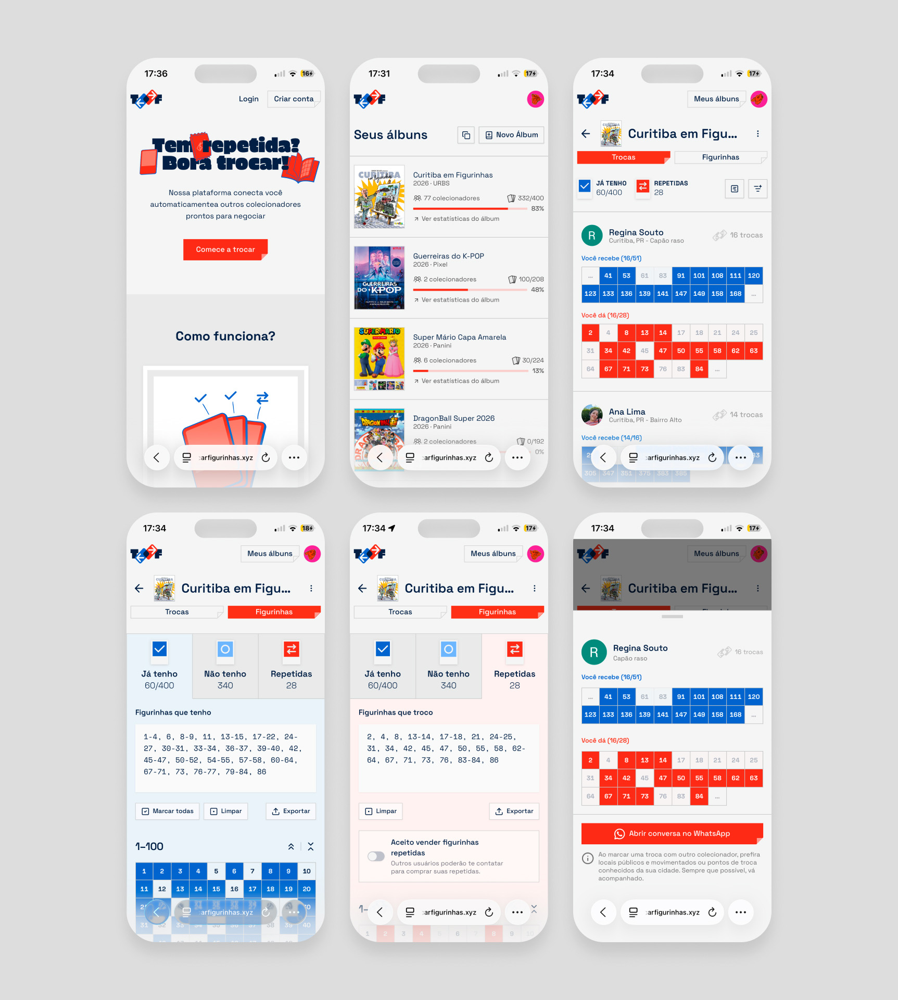
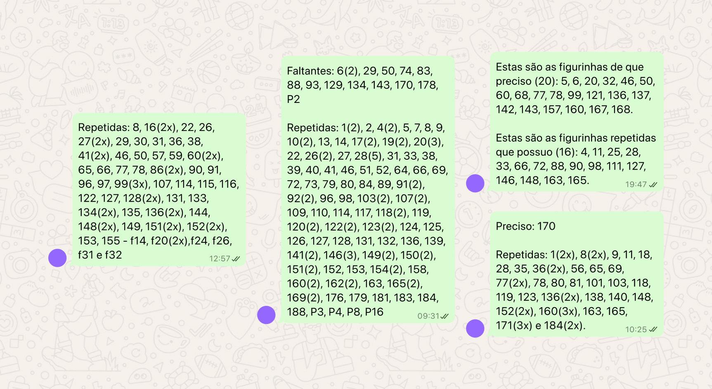
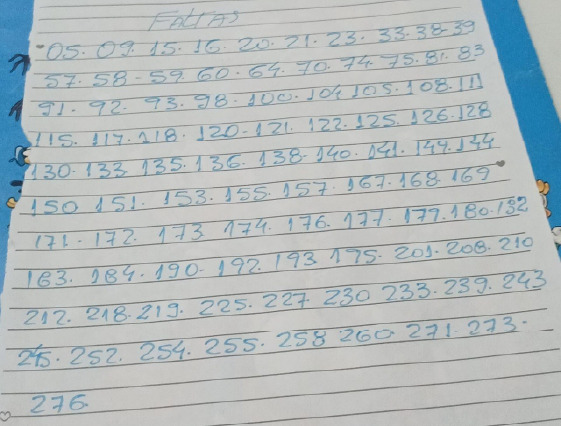
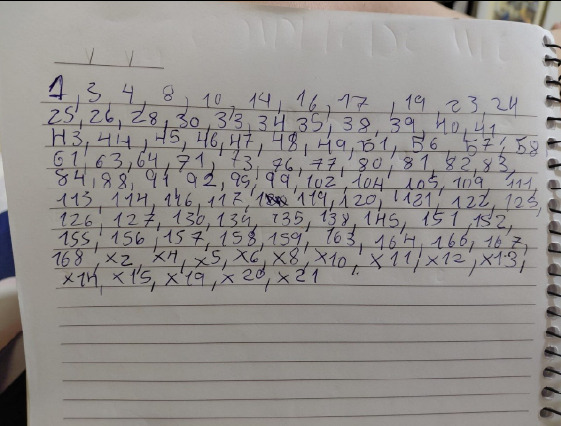
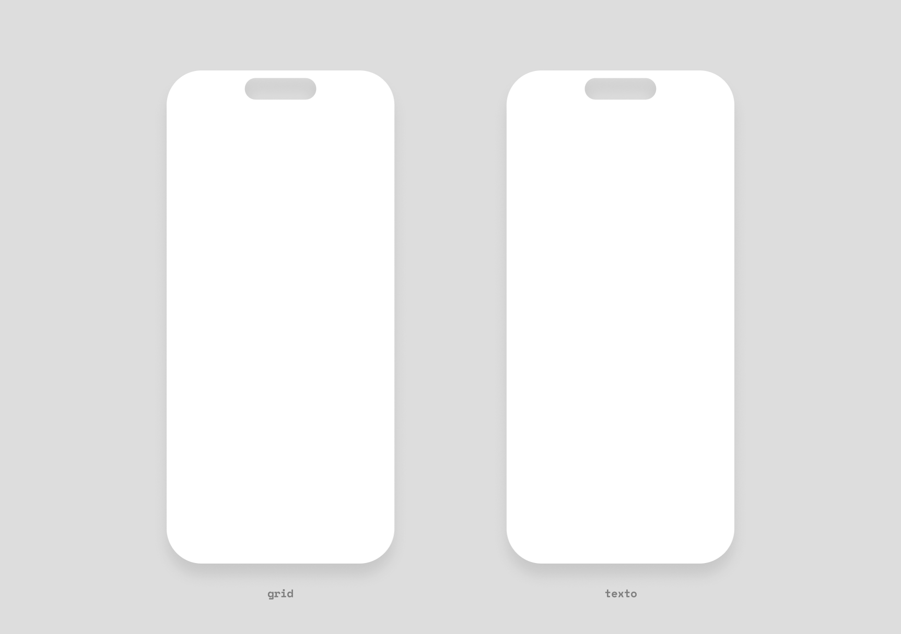
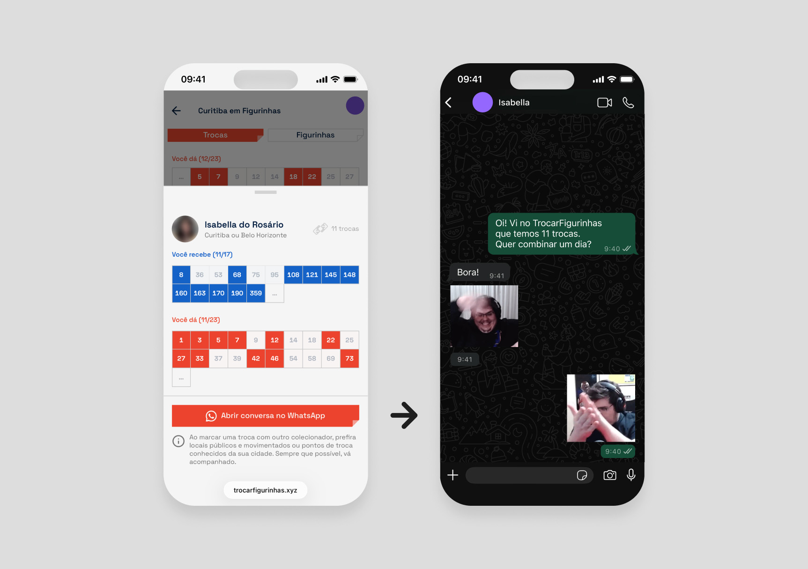
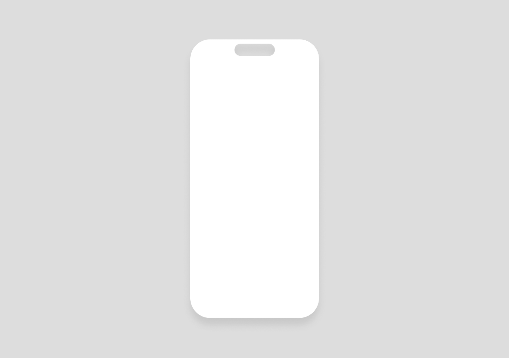
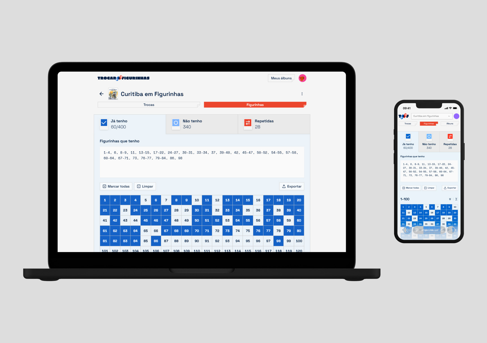

Trocar Figurinhas
VisitarPlataforma que automatiza o cruzamento de figurinhas entre colecionadores, substituindo o caos de listas manuais no WhatsApp por matches instantâneos. ~40% de conversão de visitantes, 30% de retenção semanal, em 5 semanas sem investimento em marketing.
Impacto
Conversão de ~40% dos visitantes
De cada 10 visitantes que chegam na plataforma, 4 criam conta e cadastram figurinhas.
Sessão média de ~9 minutos
Para uma ferramenta utilitária, indica uso ativo: gerenciar coleção, explorar matches, conferir novas trocas
Pico de ~90 usuários ativos semanais
100% organico, alcançamos um pico de 90 usuários ativos semanais (WAU) em 5 semanas.

Cenário
O problema
Durante a febre dos álbuns de figurinhas, colecionadores dependiam de grupos no WhatsApp para negociar trocas. O processo padrão era enviar "paredes de texto" cheias de números, cruzar manualmente com o próprio inventário, número por número. Era uma jornada complicada, com alta carga cognitiva e muito propensa a erros.
Meu Papel
Atuei desde a pesquisa em grupos de WhatsApp até a interface em produção. Estruturei o produto a partir de quatro decisões centrais para reduzir fricção e aumentar a eficiência das trocas: entrada de dados simplificada, uso do WhatsApp como canal principal, navegação orientada por dados (PostHog) e um sistema de matching para facilitar novas conexões.



Entrada de Dados sem Atrito
O maior desafio era cadastrar dezenas ou centenas de números. Observando os grupos de WhatsApp, percebemos que os usuários já digitavam sequências como "2, 5-8, 12, 30-45". Desenhamos dois métodos de entrada: um grid visual para seleção rápida e um campo de texto que aceita esse formato e preenche o grid automaticamente. Quem já tinha a lista pronta no WhatsApp, copiava, colava, e o onboarding acabava em segundos.

WhatsApp como canal nativo
No Brasil, WhatsApp é a infraestrutura social. Todo colecionador já está lá, nos grupos, negociando. Em vez de construir um chat interno e competir com esse hábito, desenhamos o produto para se apoiar nele: o match acontece na plataforma, mas um clique abre o WhatsApp direto com o contexto da troca. Isso acelerou o MVP, eliminou custo de infraestrutura de chat e explica os +90% de tráfego direto onde os próprios grupos de WhatsApp viraram o canal de aquisição orgânico.
Os cards de match mostram a troca em duas fatias visuais ("Você recebe" / "Você dá"), ranqueados por equivalência: quem tem a troca mais justa sobe ao topo.

De dropdown para album-list:
iteração com dados do PostHog
Com o sucesso do MVP (álbum "Curitiba em Figurinhas"), escalamos para múltiplos álbuns. Projetamos um dropdown no topo da tela para alternar o contexto entre muitas coleções com apenas dois cliques, sem sair da tela principal.
Analisando as gravações de sessão através do PostHog, descobrimos que os usuários ignoravam o menu dropdown. Faziam um caminho muito mais longo, navegando até a aba específica de "Álbuns" para trocar o contexto. O atalho não correspondia ao modelo mental deles, que exigia uma transição visual mais marcante.
Reestruturamos o fluxo: removemos o dropdown e tornamos a lista de coleções a página inicial padrão. O usuário agora parte de uma visão macro e entra no contexto de cada album ao clicar.

Matcher
Alguns usuários precisavam trocar com pessoas fora da plataforma. Assim surgiu o "Matcher": onde usuário cola a lista de um desconhecido e o sistema cruza com o inventário, gerando uma visualização limpa da troca. Isso resolveu uma dor imediata do usuário e transformou a funcionalidade em um canal orgânico de aquisição de novos usuários.

